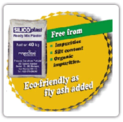
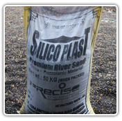
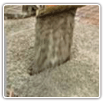
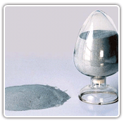
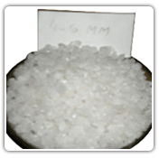
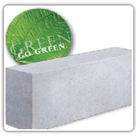
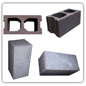
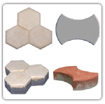
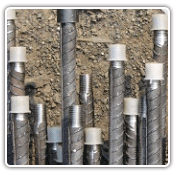

Silicoplast (Ready Mix Plaster)
|  |
Silicoplast Ready Mix Plaster is proportionate quality of 53 grade ordinary Portland cement(OPC)Processed sand with additives. Appropriate quantity of water addition makes mixer ready to use sand plaster for Internal – External wall plastering.
Benefits to Use
|
Silicoplast River Sand
|  | Silicoplast conforms to the norms of quality and consistency of sand, for ready to use especially in masonry, plastering and waterproofing work etc.
Why Silicoplast is Superior to other sand?
|
Waterproof Admixtures & Super plasticizers
|  | (A) Dr. S. Kalaiya's Crackbond waterproof Admixtures is formulated by vigorous Research & Developments to satisfy our customers, maintaining quality standard for positive environment impact in building materials.
(B) Dr. S. Kalaiya's Crackbond Superplast Water reducing Super plasticizers for Ready Mix Concrete.It's a versatile Admixture plasticizers for all grades of concrete –
|
Fly Ash
|  | Fly ash is a fine, glass-like powder recovered from gases created by coal-fired electric power generation. Fly ash is used in concrete, while it actually improves strength, segregation, easy for pumping of the concrete. Fly ash is also used as an ingredient in brick, block, paving, and structural fills. |
Quartz Sand ( Grade Sand)
|  | Grade sand means- crushing different grade quartz powder, such as crushed quartz powder and micronized quartz powder. Grinded under strict quality control, the quartz sand is widely appreciated for its quality and applications |
Gardening & Beach Sand
| It is natural sand and fine grade, it's being used at garden, beach, play ground, front area of row house, bungalows etc. |
Light Weight Block(AAC- Autoclaved Aerated Concrete)
|  | It’s reducing your construction’s impact on an environment as much as possible, while maintaining economy, comfort and durability. Advantages
|
Concrete Block ( Hollow & Solid Block)
|  | At present concrete block is very successfully being used in construction industries, as because -
|
Paver Block
|  | Paver blocks are available in different shapes, sizes and colours, and it is use in Shop floors, parking area, storage yards, foot path, petrol pumps, bus/rail terminals etc. |
Cold forged Parallel Threaded Couplers(CFPTC) (An ISO 9001 : 2008 Certified Company)
|  | Spplicetek (ISO 9001: 2008) is a Parallel Threaded Mechanical Splicing system designed for the connection of concrete reinforcing bars 16MM to 40MM.
Features
Eco Friendly Green Products ! |